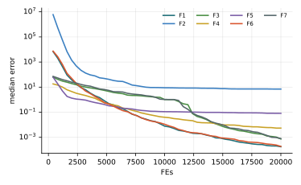

Chương 16 · Mục 16.1Chapter 16 · Section 16.1
Giải thuật di truyềnGenetic AlgorithmGenetic Algorithm — GAGA — evolution by selection, crossover and mutation
Châu Văn Vân · PTITHCM
Mục tiêu bài họcLearning objectives
Sau chương này, bạn có thểAfter this chapter you will be able to
- Giải thích GA bằng các khái niệm gen, nhiễm sắc thể, quần thể và độ thích nghi.Explain GA through genes, chromosomes, populations and fitness.
- Chọn cách mã hóa lời giải phù hợp: nhị phân, số thực, hoán vị, cây.Choose a suitable encoding: binary, real-valued, permutation, tree.
- Thực hiện tay chọn lọc roulette, lai ghép và đột biến trên một quần thể nhỏ.Carry out roulette selection, crossover and mutation by hand on a small population.
- Đọc lưu đồ và mã giả GA, rồi so sánh GA với PSO trên bộ hàm chuẩn.Read the GA flowchart and pseudocode, then compare GA with PSO on the benchmark suite.
Tổng quanOverview
Tiến hóa tự nhiên làm thuật toán tìm kiếmNatural evolution as a search algorithm
- Được J. Holland, K. De Jong và D. Goldberg nghiên cứu từ những năm 1970, dựa trên chọn lọc tự nhiên của Darwin.Studied from the 1970s by J. Holland, K. De Jong and D. Goldberg, after Darwin's natural selection.
- Cá thể thích nghi tốt có nhiều cơ hội sinh sản hơn; con cái thừa hưởng gen của cha mẹ và đôi khi bị đột biến.Fitter individuals reproduce more often; children inherit their parents' genes and are sometimes mutated.
- GA là thuật toán dựa trên quần thể, tìm kiếm theo xác suất và không cần đạo hàm, nên hợp với bài toán phi tuyến, nhiều cực trị.GA is population-based, searches probabilistically and needs no gradient, so it suits non-linear, multimodal problems.
- Thường dùng cho tối ưu rời rạc; các phiên bản GA khác nhau chủ yếu ở cách mã hóa và các toán tử.Often used for discrete optimization; GA variants differ mainly in encoding and operators.
Ý tưởng cốt lõiCore idea
Mỗi thế hệ, quần thể chọn lọc cha mẹ tốt, lai ghép để ghép các khối gen tốt lại với nhau, rồi đột biến để giữ đa dạng. Lặp lại, quần thể dần dồn về vùng có độ thích nghi cao.Each generation the population selects good parents, crosses them to combine good gene blocks, then mutates to keep diversity. Repeated, the population drifts toward high-fitness regions.
Các thành phầnComponents
Các khái niệm cơ bảnBasic concepts
- GenGene
- Đơn vị thông tin nhỏ nhất, biểu diễn một biến hay một tham số.The smallest unit of information: one variable or parameter.
- Nhiễm sắc thểChromosome
- Một lời giải ứng viên đầy đủ, gồm các gen của mọi biến quyết định.A complete candidate solution made of the genes of all decision variables.
- Quần thểPopulation
- Tập các nhiễm sắc thể ở một thế hệ; lớn thì khám phá rộng nhưng tốn chi phí.The set of chromosomes in one generation; larger explores more but costs more.
- Độ thích nghiFitness
- Hàm chấm điểm mỗi nhiễm sắc thể; quyết định ai được sinh sản.Scores each chromosome and decides who reproduces.
Năm thành phần của GAFive parts of a GA
- Mã hóa lời giảiSolution encoding
- Lai ghépCrossover
- Đột biếnMutation
- Chọn lọc cha mẹParent selection
- Đấu tranh sinh tồnSurvivor selection
Điều kiện dừngStopping criteria
Đủ số thế hệ, đạt ngưỡng độ thích nghi, không cải thiện sau nhiều thế hệ, hoặc hết thời gian.Maximum generations, a fitness threshold, no improvement for several generations, or a time limit.
Thành phần 1Part 1
Mã hóa: từ lời giải sang nhiễm sắc thểEncoding: from a solution to a chromosome
- Nhị phân: chuỗi {0, 1}L; giải mã ngược để tính độ thích nghi.Binary: a string in {0, 1}L; decoded back to evaluate fitness.
- Đa giá trị: gen là số nguyên, số thực hay nhãn rời rạc; hợp với bài toán liên tục.Multi-valued: genes are integers, reals or discrete labels; good for continuous problems.
- Hoán vị: nhiễm sắc thể là một thứ tự, ví dụ thứ tự thăm thành phố trong TSP; cần toán tử riêng.Permutation: the chromosome is an order, such as the city order in TSP; needs dedicated operators.
- Cây: mã hóa cạnh, mã đỉnh cha, Prüfer hay NetKeys cho bài toán cây khung.Tree: edge lists, parent vectors, Prüfer codes or NetKeys for spanning-tree problems.
Thành phần 4Part 4
Chọn lọc cha mẹ: cá thể tốt được chọn nhiều hơnParent selection: fitter individuals are picked more often
- Roulette: F = Σi f(indi), pi = f(indi) / F, qi = Σj≤i pj; lấy r ~ U[0, 1], chọn cá thể i khi qi−1 ≤ r < qi.Roulette: F = Σi f(indi), pi = f(indi) / F, qi = Σj≤i pj; draw r ~ U[0, 1] and pick i when qi−1 ≤ r < qi.
- Giao đấu: lấy ngẫu nhiên k cá thể, giữ cá thể tốt nhất; lặp đến đủ cha mẹ.Tournament: draw k individuals at random and keep the best; repeat until enough parents.
- Xếp hạng: chọn theo thứ hạng, ví dụ 50% tốt nhất; SUS: nhiều kim cách đều trong một lần quay.Rank: select by rank, e.g. the best 50%; SUS: equally spaced pointers in one spin.
Thành phần 2Part 2
Lai ghép: ghép gen của hai cha mẹCrossover: combine the genes of two parents
- Nhị phân, đa giá trị: lai một điểm, hai điểm, N điểm cắt; lai đồng bộ theo từng gen.Binary, multi-valued: one-, two- or N-point crossover; uniform crossover gene by gene.
- Hoán vị: lai thứ tự OX, lai tương hợp bộ phận PMX, lai chu trình CX; con luôn là hoán vị hợp lệ.Permutation: order crossover OX, partially mapped PMX, cycle crossover CX; children stay valid permutations.
- Số thực: SBX, mô phỏng lai một điểm nhị phân trên biến liên tục [8].Real-valued: SBX, which mimics binary one-point crossover on continuous variables [8].
- Cây: trộn tập cạnh của hai cây rồi sinh cây khung ngẫu nhiên bằng PrimRST.Tree: merge the edge sets of two trees, then grow a random spanning tree with PrimRST.
Thành phần 3Part 3
Đột biến: thay đổi nhỏ để giữ đa dạngMutation: small changes that keep diversity
- Đảo bit cho mã nhị phân; đổi chỗ hai gen cho mã nhị phân hay hoán vị.Bit flip for binary strings; swap two genes for binary or permutation strings.
- Đảo đoạn: chọn hai vị trí và đảo ngược đoạn ở giữa; xáo trộn: trộn lại đoạn đó.Inversion: pick two positions and reverse the segment between them; scramble: shuffle it.
- Đổi giá trị: cộng hoặc trừ một lượng nhỏ cho gen số; đột biến đa thức: con phân bố gần cha mẹ.Value change: add or subtract a small amount to a numeric gene; polynomial mutation: children stay near the parent.
- Đột biến cây: cắt một cây con và gắn vào nút khác.Tree mutation: cut a subtree and graft it onto another node.
Thành phần 5Part 5
Đấu tranh sinh tồn: ai ở lại thế hệ sauSurvivor selection: who stays for the next generation
- Nạp lại hoàn toàn: số con bằng số cha mẹ và thay toàn bộ cha mẹ; ít kẹt cục bộ nhưng có thể mất cá thể tốt.Full replacement: as many children as parents, all parents replaced; less trapping, but good parents can be lost.
- Nạp lại ngẫu nhiên: sau khi có k con, thay k cha mẹ chọn ngẫu nhiên.Random replacement: after k children are made, replace k randomly chosen parents.
- Giữ cá thể ưu tú: luôn giữ cá thể tốt nhất, nên chất lượng quần thể không bao giờ giảm.Elitism: always keep the best individual, so population quality never drops.
- Dùng phương pháp chọn lọc: trộn con vào quần thể rồi chọn cá thể bị đào thải, có thể theo tuổi.Selection-based: merge children into the population and select whom to discard, possibly by age.
Cài đặt trong giáo trìnhThis book's implementation
- Giữ 2 cá thể ưu tú, phần còn lại là con mới.Keep 2 elites; the rest are new children.
- Giải đấu kích thước 2, SBX, đột biến đa thức.Tournament of size 2, SBX, polynomial mutation.
Các bướcSteps
Các bước của GAGA step by step
Tám bước theo GeeksforGeeks [12], khớp với sơ đồ GA trong bài giảng [11].Eight steps after GeeksforGeeks [12], matching the GA diagram in the lecture [11].
- Khởi tạo quần thể ngẫu nhiên trong miền ràng buộc.Initialize a random population within the constraints.
- Đánh giá độ thích nghi của từng nhiễm sắc thể.Evaluate the fitness of every chromosome.
- Chọn cha mẹ theo độ thích nghi: roulette, giao đấu hay SUS.Select parents by fitness: roulette, tournament or SUS.
- Lai ghép cha mẹ với xác suất pc để tạo con.Cross parents with probability pc to make children.
- Đột biến con với xác suất pm.Mutate children with probability pm.
- Đánh giá con và tạo thế hệ mới, có giữ cá thể ưu tú.Evaluate the children and form the new generation, keeping elites.
- Kiểm tra điều kiện dừng; nếu chưa thỏa, quay lại bước 3.Check the stopping criterion; if not met, go back to step 3.
- Trả về nhiễm sắc thể tốt nhất.Return the best chromosome.
3 – 7 vòng lặp chínhmain loop
Thuật toán GAThe GA algorithm
Lưu đồ và mã giảFlowchart and pseudocode
Tham sốParameters
Tham số chính của GAMain GA parameters
| Tham sốParameter | Ý nghĩaMeaning | Giá trị thường dùngTypical value |
|---|---|---|
| N | Kích thước quần thểPopulation size | 20 – 100 (GfG: 40; giáo trình: 30)(GfG: 40; this book: 30) |
| pc | Xác suất lai ghépCrossover probability | 0.6 – 0.95 (GfG và giáo trình: 0.9)(GfG and this book: 0.9) |
| pm | Xác suất đột biến mỗi genPer-gene mutation probability | 1/L hayor 0.001 – 0.2 (giáo trình: 1/D)(this book: 1/D) |
| k | Kích thước giải đấuTournament size | 2 – 3 |
| e | Số cá thể ưu túNumber of elites | 1 – 2 |
| T | Số thế hệ hoặc ngân sách đánh giáGenerations or evaluation budget | GfG: 100 thế hệ; giáo trình: 20 000 đánh giáGfG: 100 generations; this book: 20,000 evaluations |
Đột biến lớn biến GA thành tìm kiếm ngẫu nhiên; đột biến quá nhỏ làm quần thể mất đa dạng và hội tụ sớm.Heavy mutation turns GA into random search; too little mutation lets the population lose diversity and converge prematurely.
Mô phỏngSimulation
GA trên cùng địa hìnhGA on the same landscape
Mỗi bước là một thế hệ: hai cá thể ưu tú (cam, viền đậm) được giữ lại, phần còn lại là con của giải đấu, lai SBX và đột biến đa thức.Each step is one generation: two elites (orange, bold outline) survive; the rest are children of tournament selection, SBX and polynomial mutation.
Quan sát: quần thể co về vài vùng tốt; khi mất đa dạng, chỉ đột biến còn tạo được bước nhảy xa.Watch the population shrink toward a few good regions; once diversity is lost, only mutation makes long jumps.
Ví dụ tính tayWorked example
Một thế hệ GA nhị phân với f(x) = x², x ∈ [0, 31]One binary-GA generation with f(x) = x², x ∈ [0, 31]
- Kim quay r = 0.20, 0.70, 0.55, 0.95 chọn 11000, 10011, 11000, 10011.Spins r = 0.20, 0.70, 0.55, 0.95 pick 11000, 10011, 11000, 10011.
- Chỉ cá thể 2 và 4 được chọn: hai cá thể có p lớn nhất chiếm 80% bánh xe.Only individuals 2 and 4 are picked: the two largest p cover 80% of the wheel.
Lai ghép và đột biếnCrossover and mutation
- Lai một điểm sau gen thứ 2: 11|000 × 10|011 → 11011, 10000.One-point crossover after gene 2: 11|000 × 10|011 → 11011, 10000.
- Đột biến bit cuối của 10000: 10000 → 10001; cặp thứ hai không lai, giữ nguyên.Flip the last bit of 10000: 10000 → 10001; the second pair is not crossed and is copied.
- Thế hệ mới 11011, 10001, 11000, 10011: f = 729, 289, 576, 361.New generation 11011, 10001, 11000, 10011: f = 729, 289, 576, 361.
- Độ thích nghi trung bình tăng từ 292.5 lên 488.75; cá thể tốt nhất 11011 = 27, f = 729.Mean fitness rises from 292.5 to 488.75; the best is 11011 = 27, f = 729.
Quần thể đầu theo ví dụ kinh điển của Goldberg [3]; các số ngẫu nhiên r, điểm cắt và bit đột biến được chọn để minh họa.The initial population follows Goldberg's classic example [3]; the random numbers r, cut point and mutated bit are chosen for illustration.
Thực nghiệm · GAExperiment · GA
Kết quả trên bộ 7 hàm, D = 10, 30 lần chạyResults on the 7-function suite, D = 10, 30 runs
| HàmFunction | Trung bìnhMean | Độ lệchStd | Trung vịMedian | so PSOvs PSO |
|---|---|---|---|---|
| F1 · Sphere | 2.03e−4 | 1.38e−4 | 1.79e−4 | − |
| F2 · Rosenbrock | 9.40e+0 | 1.23e+1 | 6.99e+0 | − |
| F3 · Rastrigin | 3.62e−2 | 1.81e−1 | 7.46e−4 | + |
| F4 · Ackley | 5.48e−3 | 3.46e−3 | 5.44e−3 | − |
| F5 · Griewank | 8.53e−2 | 3.86e−2 | 8.18e−2 | + |
| F6 · Shifted Sphere | 2.13e−4 | 1.42e−4 | 1.90e−4 | − |
| F7 · Shifted Rastrigin | 4.01e−2 | 1.83e−1 | 7.89e−4 | + |
- Sai số f(xbest) − f* sau 20 000 lần đánh giá; n = 30; giải đấu 2, SBX ηc = 20, pc = 0.9, đột biến đa thức pm = 1/D, 2 ưu tú; giá trị < 10−8 ghi là 0.Error f(xbest) − f* after 20,000 evaluations; n = 30; tournament 2, SBX ηc = 20, pc = 0.9, polynomial mutation pm = 1/D, 2 elites; values < 10−8 shown as 0.
- Cột cuối: Wilcoxon rank-sum với PSO (α = 0.05): + tốt hơn, − kém hơn, ≈ không khác biệt.Last column: Wilcoxon rank-sum vs PSO (α = 0.05): + better, − worse, ≈ no difference.
- Xếp hạng Friedman trung bình: 12.00, đứng thứ 13/23 trong 23 phương pháp của giáo trình: 18 thuật toán bầy đàn cùng GA, QPSO, GA-PSO, tìm kiếm ngẫu nhiên và (1+1)-ES.Average Friedman rank: 12.00, position 13/23 among the textbook’s 23 methods: 18 swarm algorithms plus GA, QPSO, GA-PSO, random search and (1+1)-ES.
- GA thắng PSO trên F3, F5, F7 nhiều đỉnh nhưng thua trên F1, F2, F4, F6; trên hàm đơn đỉnh, SBX + đột biến đa thức tinh chỉnh chậm hơn cập nhật vận tốc.GA beats PSO on the multimodal F3, F5, F7 but loses on F1, F2, F4, F6; on unimodal functions SBX + polynomial mutation refines more slowly than the velocity update.
Thực nghiệm · GAExperiment · GA
Đường hội tụ (trung vị 30 lần chạy)Convergence (median of 30 runs)

Mã nguồnSource code
Mã nguồn PythonPython source code
Đoạn trích phần cập nhật chính; tệp đầy đủ có chú thích và tham số mặc định theo bài gốc.Excerpt of the main update; the full file documents the default parameters of the original paper. code/si/algorithms/ga.py
while not prob.done: o = np.argsort(f) kids = [X[o[k]].copy() for k in range(elite)] while len(kids) < n: i = min(rng.integers(n, size=2), key=lambda q: f[q]) j = min(rng.integers(n, size=2), key=lambda q: f[q]) a, b = X[i], X[j] if rng.random() < pc: a, b = sbx(rng, a, b, prob.lb, prob.ub) kids += [poly_mutation(rng, a, prob.lb, prob.ub, pm), poly_mutation(rng, b, prob.lb, prob.ub, pm)] X = np.array(kids[:n]) f = np.concatenate([f[o[:elite]], prob(X[elite:])]) return prob.best_x, prob.best_f
Chạy lại toàn bộ thực nghiệm: python -m experiments.run_continuous trong thư mục code/ (xem PROTOCOL.md).Reproduce all experiments: python -m experiments.run_continuous inside code/ (see PROTOCOL.md).
Các biến thểVariants
Các biến thể của GAGA variants
GA mã hóa thựcReal-coded GA
Lai SBX và đột biến đa thức cho biến liên tục (Deb & Agrawal, 1995) [8].SBX and polynomial mutation for continuous variables (Deb & Agrawal, 1995) [8].
GA hoán vịPermutation GA
OX, PMX, CX và đột biến đảo đoạn cho TSP, lập lịch [3].OX, PMX, CX and inversion mutation for TSP and scheduling [3].
GA thích nghiAdaptive GA
pc, pm thay đổi theo độ thích nghi của từng cá thể (Srinivas & Patnaik, 1994) [5].pc, pm adapt to each individual's fitness (Srinivas & Patnaik, 1994) [5].
NSGA-IINSGA-II
GA đa mục tiêu: sắp xếp không trội và khoảng cách đông đúc (Deb và cs., 2002) [9]; xem chương 14.Multi-objective GA: non-dominated sorting and crowding distance (Deb et al., 2002) [9]; see chapter 14.
Lai GA với PSO (GA-PSO) và biến thể lượng tử QPSO được trình bày ở mục 16.2–16.3.Hybrid GA-PSO and the quantum-inspired QPSO are covered in sections 16.2–16.3.
Ứng dụngApplications
GA dùng ở đâuWhere GA is used
GA hợp nhất khi lời giải mã hóa được thành chuỗi gen và chỉ có thể đánh giá, không có đạo hàm.GA fits best when a solution can be encoded as a gene string and only evaluated, with no gradient.
Tối ưu hàmFunction optimization
Hàm phi tuyến, nhiều cực trị; ví dụ GfG cực đại x sin(10πx) + 1 trên [−1, 2].Non-linear, multimodal functions; the GfG example maximizes x sin(10πx) + 1 on [−1, 2].
Lập lịchScheduling
Lập lịch công việc, thời khóa biểu, phân bổ tài nguyên.Job scheduling, timetabling, resource allocation.
Người du lịch (TSP)Travelling salesman
Mã hóa hoán vị với lai OX/PMX tìm hành trình ngắn nhất.Permutation encoding with OX/PMX crossover finds short tours.
Chọn đặc trưngFeature selection
Mỗi bit bật hoặc tắt một đặc trưng của mô hình học máy.Each bit switches one feature of a machine-learning model on or off.
Mạng nơ-ronNeural networks
Tìm trọng số, kiến trúc và siêu tham số.Search weights, architectures and hyper-parameters.
Đánh giáAssessment
Linh hoạt nhưng không nhanhFlexible, but not fast
Điểm mạnhStrengths
- Không cần đạo hàm; làm việc được với hàm hộp đen, rời rạc, nhiều cực trị.No gradient needed; works on black-box, discrete and multimodal functions.
- Mã hóa và toán tử linh hoạt cho nhiều loại bài toán: nhị phân, hoán vị, cây, số thực.Flexible encodings and operators for many problem types: binary, permutation, tree, real.
- Trong thực nghiệm, GA thắng PSO trên F3, F5, F7 nhiều đỉnh.In the experiment GA beats PSO on the multimodal F3, F5, F7.
Hạn chế và biến thểLimitations and variants
- Không quá nhanh: thua PSO trên các hàm đơn đỉnh F1, F2, F4, F6 với cùng ngân sách.Not fast: loses to PSO on the unimodal F1, F2, F4, F6 under the same budget.
- Nhiều tham số (N, pc, pm, k, số ưu tú) và nhiều lựa chọn toán tử cần hiệu chỉnh.Many parameters (N, pc, pm, k, elites) and operator choices to tune.
- Dễ hội tụ sớm khi chọn lọc quá mạnh hoặc đột biến quá yếu.Prone to premature convergence when selection is too strong or mutation too weak.
Bài tập và thực hànhExercises and labs
Luyện tập: tính tay rồi lập trìnhPractice: by hand, then in code
Bài tập lý thuyếtTheory exercises
- Với f = 10, 30, 20, 40, tính pi, qi và cá thể được chọn khi r = 0.15, 0.45, 0.62, 0.99.With f = 10, 30, 20, 40, compute pi, qi and the picks for r = 0.15, 0.45, 0.62, 0.99.
- Lai OX cho cha 1 2 3 4 5 6 7 8 9, mẹ 9 3 7 8 2 6 5 1 4, hai điểm lai sau gen 3 và gen 6.Apply OX to parent 1 1 2 3 4 5 6 7 8 9, parent 2 9 3 7 8 2 6 5 1 4, cut points after genes 3 and 6.
- Vì sao giữ cá thể ưu tú làm độ thích nghi tốt nhất không bao giờ giảm?Why does elitism guarantee that the best fitness never decreases?
Thực hành Python / MATLABPython / MATLAB labs
- Cài GA nhị phân cho ví dụ f(x) = x² và chạy 20 thế hệ với N = 4 và N = 20.Implement a binary GA for f(x) = x² and run 20 generations with N = 4 and N = 20.
- So sánh chọn lọc roulette và giao đấu trên F3 Rastrigin, 30 lần chạy.Compare roulette and tournament selection on F3 Rastrigin over 30 runs.
- Thử pm = 0, 1/D, 0.5 và vẽ đường hội tụ.Try pm = 0, 1/D, 0.5 and plot the convergence curves.
Tài liệu tham khảo (1/2)References (1/2)
Đọc thêm: tài liệu gốc và bài giảngFurther reading: original works and lectures
- J. H. Holland, Adaptation in Natural and Artificial Systems. Ann Arbor, MI, USA: Univ. Michigan Press, 1975.
- K. A. De Jong, “An analysis of the behavior of a class of genetic adaptive systems,” Ph.D. dissertation, Univ. Michigan, Ann Arbor, MI, USA, 1975.
- D. E. Goldberg, Genetic Algorithms in Search, Optimization, and Machine Learning. Reading, MA, USA: Addison-Wesley, 1989.
- D. E. Goldberg and K. Deb, “A comparative analysis of selection schemes used in genetic algorithms,” in Foundations of Genetic Algorithms, 1991, pp. 69–93, doi: 10.1016/B978-0-08-050684-5.50008-2.
- M. Srinivas and L. M. Patnaik, “Adaptive probabilities of crossover and mutation in genetic algorithms,” IEEE Trans. Syst., Man, Cybern., vol. 24, no. 4, pp. 656–667, Apr. 1994, doi: 10.1109/21.286385.
- M. Srinivas and L. M. Patnaik, “Genetic algorithms: a survey,” Computer, vol. 27, no. 6, pp. 17–26, Jun. 1994, doi: 10.1109/2.294849.
Tài liệu tham khảo (2/2)References (2/2)
Đọc thêm: tài liệu gốc và bài giảngFurther reading: original works and lectures
- D. Whitley, “A genetic algorithm tutorial,” Statistics and Computing, vol. 4, no. 2, pp. 65–85, Jun. 1994, doi: 10.1007/BF00175354.
- K. Deb and R. B. Agrawal, “Simulated binary crossover for continuous search space,” Complex Syst., vol. 9, no. 2, pp. 115–148, 1995.
- K. Deb, A. Pratap, S. Agarwal, and T. Meyarivan, “A fast and elitist multiobjective genetic algorithm: NSGA-II,” IEEE Trans. Evol. Comput., vol. 6, no. 2, pp. 182–197, Apr. 2002, doi: 10.1109/4235.996017.
- S. Katoch, S. S. Chauhan, and V. Kumar, “A review on genetic algorithm: past, present, and future,” Multimedia Tools and Applications, vol. 80, no. 5, pp. 8091–8126, 2021, doi: 10.1007/s11042-020-10139-6.
- T. T. B. Huỳnh, “Genetic Algorithm (GA),” lecture slides, School of Information and Communication Technology, Hanoi University of Science and Technology, Hanoi, Vietnam.
- GeeksforGeeks, “Genetic Algorithms.” [Online]. Available: https://www.geeksforgeeks.org/dsa/genetic-algorithms/ (accessed Oct. 22, 2026).
Tóm lạiIn short
Cảm ơn các bạn đã theo dõiThank you for your attention
Châu Văn Vân · PTITHCM · Tài liệu gốc: Holland, Adaptation in Natural and Artificial Systems, 1975Original paper: Holland, Adaptation in Natural and Artificial Systems, 1975